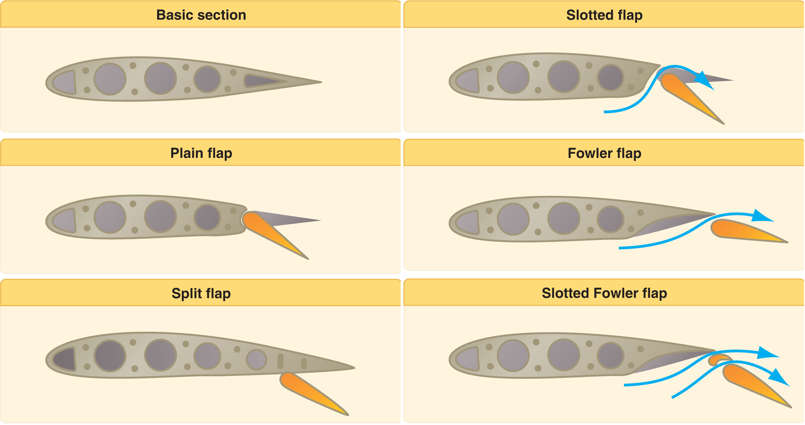

Wing flaps are the movable surfaces on the trailing edge of a plane’s wings.
By changing their positions, pilots can change the camber (curvature) of the wing
to achieve the desired amount of drag and lift for any scenario. (Johnston 2023.
This article will explore their origins, and heavy impact on aviation today.
History
George Cayley was one of the first pioneers of aircraft, being the first to move from ornithopter like devices to fixed wing aircraft. (Bilstein 2025)
He discovered that the cambered nature of a bird’s wing produced much more lift than a flat wing (Bilstein 2025). This was due to Bernoulli’s principle.
The curved top half of the wing was longer; therefore, air must travel faster over it. Resulting in a slower moving, higher-pressure air beneath the wing,
pushing it upwards. Following George Cayley, others began studying the science of wings, most notably the Wright brothers, famous for flying the world's first powered, controlled airplane
and Francis H Wenham, who was responsible for building the first wind tunnel to study aerodynamics. (Bilstein 2025)
Analysis and discussion
Four primary flap types have been developed over the course of aviation history: Fowler flaps, slotted flaps, split flaps, and plain flaps.
The most basic are the plain flaps, which are hinged panels on the wing's trailing edge that, when triggered, pivot downward. However, the amount of lift
they can produce is the most limited. A big wake of turbulent air is produced behind the wing as air passes over it, losing energy and possibly separating
from the surface (Cutler 2024). When air moves from high-pressure areas to low-pressure areas, it creates a wake.
This wake is created by the high-pressure air on the wing's underside moving outward and curling upward towards the upper surface.
Split flaps work similarly, but they only extend from the wing's underside, giving it two trailing edges. They create a smaller wake than plain flaps,
but they also produce a lot more drag (Cutler 2024). It can be dangerous for planes flying into this wake turbulence because it can result in uncontrollable rolls,
altitude loss, or structural stress. The aircraft itself, however, can descend at a steeper angle at the same speed due to the increased drag (Cutler 2024).
The most popular kind of flaps today are slotted flaps, which are made so that a small opening, or slot, forms between the flap and the wing when it is extended (Cutler 2024).
High-pressure air from the wing's underside travels through this slot to the upper surface, supplying energy to the boundary layer, which is the thin layer of air that flows
near the wing's surface. By delaying airflow separation, lift is increased and drag is decreased. Resulting in significantly more lift with better control (Cutler 2024).
Harlan D. Fowler patented the Fowler flaps, which extend backward on rails or tracks to significantly increase the surface area of the wing (Cutler 2024).
A popular variant that combines both designs is the slotted Fowler flap, which increases the wing area while keeping slots for better airflow (Cutler 2024; Joel 2020).
For a plane to fly, a force is needed to oppose gravity, lift. First, to create lift, motion is required between the object and fluid. In our case, the plane and air.
This is where the shape of the wing is crucial. The curved top face forces air to move along it faster as opposed to air beneath it. This means that air on the top face will have a lower pressure.
This pressure difference creates an upward force. The low-pressure air “pulls”. And the high-pressure air beneath the wing “pushes”. This is Bernoulli’s principle.
Another cause of lift is Newton’s third law. Every action has an equal and opposite reaction The downwards force from the wing to the air, results in an opposing upwards force from the air to the wing.
Drag is caused by a lot of factors. Such being the shape of the plane, and the result of lift being created. Parasite drag is drag of a body moving through a fluid. This includes friction drag.
The extending of flaps also increases drag as there is a larger area for friction between the wing and air. And it can be reduced by making objects smoother and more streamlined in shape.
Another type of drag is induced drag. It is simply a by-product of creating lift caused by wingtip vortices and downwash of air from the wing

Conclusion
From early pioneers such as Cayley to the modern engineering of these flaps, the science behind aviation has evolved immensely through years of experimentation and innovation.
Cayley’s early connection from a birds cambered wing to his own fixed wings helped lay the foundation for aerodynamics, allowing engineers to later refine the relationship between wing and air.
The invention of flaps marked a turning point in flight giving pilots the ability to control lift and drag. Each type, from the plain flap to the slotted-Fowler flap represents a step towards safer,
more efficient and versatile flight. Ultimately, this deep study into lift and drag shows that even the smallest mechanical changes can have a huge impact on how we conquer the skies.
References
Johnston, M. (2023) Wing Flaps: How Do They Function and What Is their Purpose. Available at: Wing Flaps: How Do They Function and What Is Their Purpose? (Accessed: 24 October 2025).
Bilstein, R. E. (2025) Construction of the sustaining wings: the problem of lift. Available at: History of flight - Construction, Lift, Sustaining Wings | Britannica (Accessed: 25 October 2025).
Cutler, C. (2024) How The 4 Types of Aircraft Flaps Work. Available at: https://www.boldmethod.com/learn-to-fly/aircraft-systems/how-the-4-different-types-of-aircraft-flaps-work (Accessed: 25 October 2025).
Joel, N. (2020) How Do Fowler Flaps Work. Available at: How Do Fowler Flaps Work? - Aviation History - Century of Flight (Accessed: 25 October 2025).